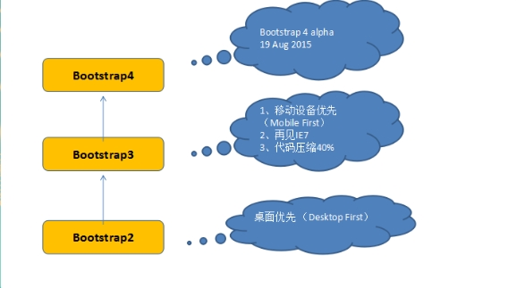
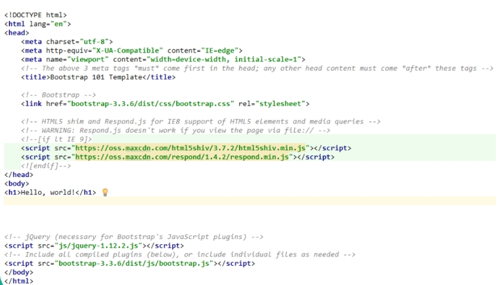

bootstrap版本

bootstrap基本模板

Bootstrap 可以快速建站，他的样式可以微调，但是不能修改布局元素。可以更改颜色不影响布局的样式属性。
理解容器：container 有边距（）container-fluid（边距 ： 15px）
栅格系统：必须放在容器（container ）中，同时指定一个row
栅格系统：最多是12列，而且是col开头的class.如果超过12列自动换行。
设备及浏览器宽度。
xs(手机)，sm(Pad),md(PC)，lg(大屏幕电脑)
Hidden-控制不同屏幕的显示元素。
表单：（form）
Input 和 lable元素使用。 都是块级元素。
图片的自适应，图片可以圆，可是设置一个灰色边框。
Button。Class=”btn”